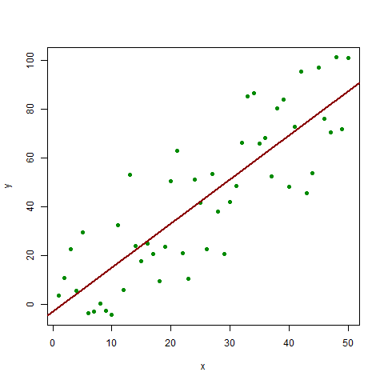

A histogram plot
Plots get a little more complicated. First we make something to plot (simulated regression data).
n <- 50 x <- seq(1, n) a.true <- 3 b.true <- 1.5 y.true <- a.true + b.true * x s.true <- 17.3 set.seed(987) y <- y.true + s.true * rnorm(n) out1 <- lm(y ~ x) summary(out1)
(for once we won’t show the code chunk itself, look at foo.org if
you want to see what the actual code chunk was).
plot(x, y, pch=19, col="green4") abline(out1, lwd=2, col="red4")

A histgrame plot
Emacs Config File for Octopress Blog
The contents of .emacs file.
This is Emacs
;;----------------------------------------------------------------------------- ;; Emacs config ;; ------------ ;; Date: 2012.10.30 ;; When Emacs is started, it normally tries to load a Lisp program from an initialization file, ;; using the filenames ~/.emacs, ~/.emacs.el, or ~/.emacs.d/init.el; ;; ;; There can also be a default init file, which is the library named default.el, ;; If this library exists, it is loaded whenever you start Emacs (except when you specify ??-q?¡¥). ;; But your init file, if any, is loaded first; if it sets inhibit-default-init non-nil, ;; then default is not loaded. ;; ;; Your site may also have a site startup file; this is named site-start.el, ;; if it exists. Like default.el. ;; Emacs loads this library before it loads your init file. ;; To inhibit loading of this library, use the option ??--no-site-file?¡¥. ;; We recommend against using site-start.el for changes that some users may not like. ;; It is better to put them in default.el, so that users can more easily override them. ;; ;;----------------------------------------------------------------------------- (setq initial-major-mode 'text-mode) (global-font-lock-mode t) (fset 'yes-or-no-p 'y-or-n-p) (show-paren-mode t) (setq show-paren-style 'parentheses) (display-time-mode 1) (setq display-time-24hr-format t) (setq display-time-day-and-date t) (transient-mark-mode t) (setq x-select-enable-clipboard t) ;;; ;;; Use Aspell for spell checking ;;; (setq-default ispell-program-name "D:/Emacs/aspell/bin/aspell.exe") ;; RORG-MODE ;; Org - Babel: Configure active languages ;; active Babel languages (org-babel-do-load-languages 'org-babel-load-languages '((R . t) (emacs-lisp . nil) )) ;;; ;;; AUCTeX ;;; ;; We assume that MiKTeX (http://www.miktek.org) is used for ;; TeX/LaTeX. Otherwise, change the (require ...) line as per the ;; AUCTeX documentation. (load "auctex.el" nil t t) (load "preview-latex.el" nil t t) (require 'tex-mik) ;;; ESS ;;; ;; Load ESS and activate the nifty feature showing function arguments ;; in the minibuffer until the call is closed with ')'. (require 'ess-site) ;; Path to R executable. (setq-default inferior-R-program-name "D:/R/bin/i386/rterm.exe") (setq default-fill-column 80) (tool-bar-mode nil) (set-default-font "Courier New-14") ;;; ;;; Chinese ;;; (setq locale-coding-system 'euc-cn) (set-keyboard-coding-system 'euc-cn) (set-buffer-file-coding-system 'utf-8) (set-terminal-coding-system 'utf-8) (set-selection-coding-system 'utf-8) (prefer-coding-system 'utf-8) ;;----------------------------------------------------------------------------- ;; color themes ;; ------------ ;; Source: http://www.emacswiki.org/cgi-bin/wiki/ColorTheme ;; Usage: M-x color-theme-select RET ;;----------------------------------------------------------------------------- (require 'color-theme) (color-theme-initialize) (color-theme-hober) ;;; billw, black, dark-laptop, hober, lethe, taylor, tty-dark ;; load htmlize.el , which org-babel export syntax highlight source code need it (require 'htmlize) ;; #+LATEX_HEADER: \usepackage[UTF8,noindent]{ctex} (setq texcmd "xelatex %f") (custom-set-variables ;; custom-set-variables was added by Custom. ;; If you edit it by hand, you could mess it up, so be careful. ;; Your init file should contain only one such instance. ;; If there is more than one, they won't work right. '(inhibit-startup-echo-area-message t) '(inhibit-startup-screen t) '(display-time-mode t) '(show-paren-mode t) '(transient-mark-mode (quote (only . t))) '(ess-R-font-lock-keywords (quote ((ess-R-fl-keyword:modifiers . t) (ess-R-fl-keyword:fun-defs . t) (ess-R-fl-keyword:keywords . t) (ess-R-fl-keyword:assign-ops . t) (ess-R-fl-keyword:constants . t) (ess-fl-keyword:fun-calls . t) (ess-fl-keyword:numbers . t) (ess-fl-keyword:operators . t) (ess-fl-keyword:delimiters . t) (ess-fl-keyword:= . t) (ess-R-fl-keyword:F&T . t)))) '(inferior-R-args "--no-restore-history --no-save ") ) (custom-set-faces ;; custom-set-faces was added by Custom. ;; If you edit it by hand, you could mess it up, so be careful. ;; Your init file should contain only one such instance. ;; If there is more than one, they won't work right. ) (require 'ctable) (require 'orglue) (require 'org-octopress) (setq org-octopress-directory-top "D:/Github/octopress/source") (setq org-octopress-directory-posts "D:/Github/octopress/source/_posts") (setq org-octopress-directory-org-top "D:/Github/octopress/source") (setq org-octopress-directory-org-posts "D:/Github/octopress/source/blog") (setq org-octopress-setup-file "D:/Github/octopress/setupfile.org")
Equation Problems Office 2013
Question
MS Word 2013 crashes when using equations. The equation editor in Word 2013 does not respond. It just goes blank ……
Figure 1. Equation Problems Office 2013.

Answer
To solve the problem, download and install Microsoft Office Compatibility Pack ……
Done!
~~ Tao
Change SSH Keys
~/.ss/config :
# Default github user(first@mail.com)
Host github-first
HostName github.com
User git
IdentityFile C:/Users/username/.ssh/id_rsa
# second user(second@mail.com)
Host github-second
HostName github.com
User git
IdentityFile C:/Users/username/.ssh/id_rsa_second
Fatal: Remote Origin Already Exists
fatal: remote origin already exists
D:\Github\taohill> git remote -v
octopress git://github.com/imathis/octopress.git (fetch)
octopress git://github.com/imathis/octopress.git (push)
origin git@github.com:taohill/taohill.github.com.git (fetch)
origin git@github.com:taohill/taohill.github.com.git (push)
upstream
D:\Github\taohill> notepad .\.git\config
[core]
repositoryformatversion = 0
filemode = true
bare = false
logallrefupdates = true
[remote "octopress"]
url = git://github.com/imathis/octopress.git
fetch = +refs/heads/*:refs/remotes/octopress/*
[branch "source"]
remote = origin
merge = refs/heads/master
[remote "origin"]
url = git@github.com:taohill/taohill.github.com.git
fetch = +refs/heads/*:refs/remotes/origin/*
D:\Github\taohill\_deploy\.git> git remote -v
origin
upstream
D:\Github\taohill\_deploy\.git> git remote set-url origin git@github.com:taohill/taohill.github.com.git
D:\Github\taohill\_deploy\.git> git remote -v
origin git@github.com:taohill/taohill.github.com.git (fetch)
origin git@github.com:taohill/taohill.github.com.git (push)
upstream
D:\Github\taohill\_deploy\.git> notepad .\config
[core]
repositoryformatversion = 0
filemode = false
bare = false
logallrefupdates = true
symlinks = false
ignorecase = true
hideDotFiles = dotGitOnly
[remote "origin"]
url = git@github.com:taohill/taohill.github.com.git
[branch "master"]
remote = origin
merge = refs/heads/master